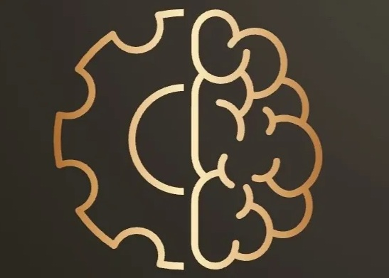
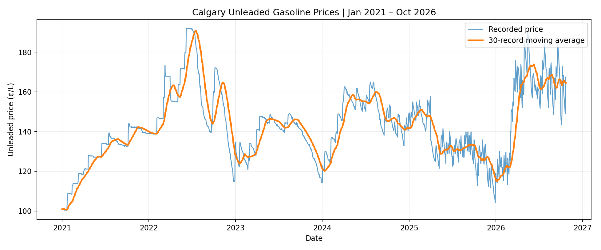

Pipeline safety intelligence
FLAGSHIP · Safety & Engineering
Pipeline Safety Intelligence — Flagship
A data-driven workflow focused on pipeline incidents, people safety and process safety.
Process safetyAnalyticsDashboard
Explore project ↗A living portfolio of engineering applications, AI experiments, analytics and safety education. Explore the decisions, evidence and working prototypes behind each creation.

Start with Pipeline Safety Intelligence: evidence-based analysis, dashboard insights, recommendations and responsible use. Calgary Fuel Forecasting remains a substantial secondary case study.
Explore a five-part learning project covering Canadian pipeline occurrences, data preparation, interactive dashboard analysis, 15 recommendations, and careful interpretation of recorded events. Historical counts are not operator risk rankings.
Seven projects spanning process safety, AI, analytics, educational development and practical making.
A data-driven workflow focused on pipeline incidents, people safety and process safety.
Interactive learning game exploring safety principles through a gravity-pyramid challenge.

Calgary fuel price historyFeatured forecasting case study with one primary ChatGPT implementation and five supporting AI development approaches.
Energy prediction exploration comparing decision-tree methods and prepared feature sets.
Power BI fleet analytics using trip, vehicle and delivery-site data.
A space for practical prototypes, engineering designs and maker experiments.
An interactive plant-learning quiz for exploratory education, available as a public web application.
No projects match your filters.
Galarza Lab complements the professional portfolio by making engineering, learning and digital work tangible. Work is clearly labelled as an application, case study or developing experiment.